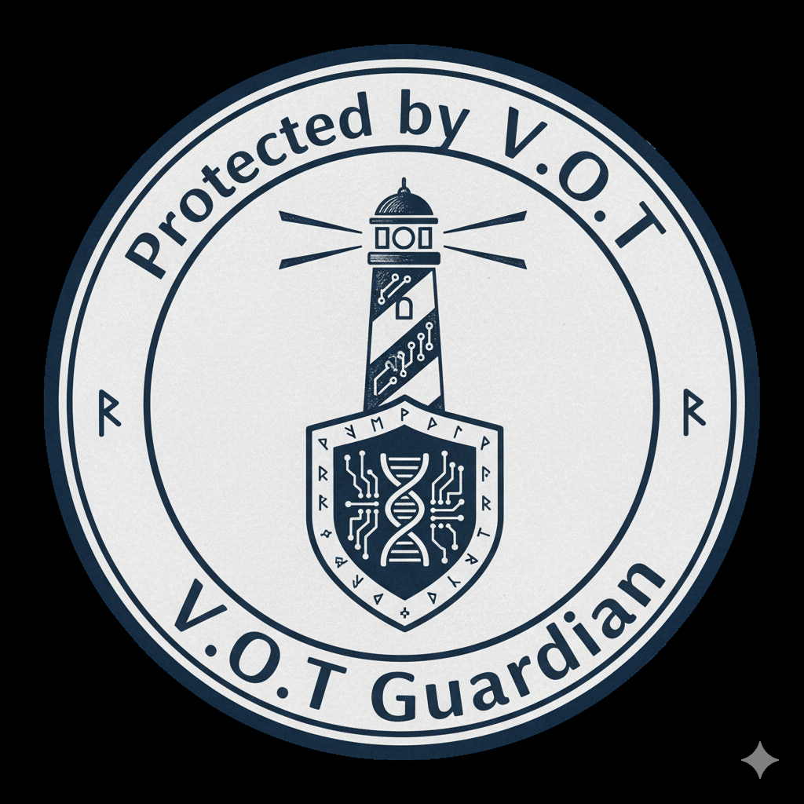
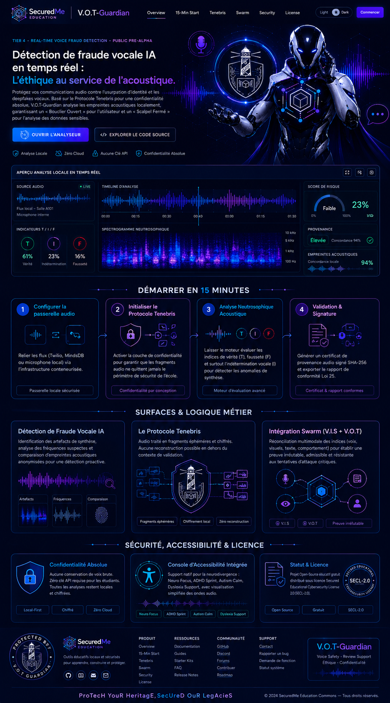

Source audio
review window
- WAVMP3 / OGG / OPUS
- 10 MBvisible UI limit
- 16 kHzrecommended sample rate

V.O.T Guardian SecuredMe EducationTier 4 - Voice-risk review - Public pre-alpha
V.O.T Guardian is a SecuredMe Education surface for teaching signal quality, consent, uncertainty, evidence gaps, and human review. It supports defensive fraud-awareness learning; it is not an operational detector or an autonomous authority.

Local analyzer preview
The current repo contains an upload review surface, audio feature extraction, ML predictor work, Tenebris session wrapping, Twilio scaffolding, and Education pointer contracts. The landing presents these as classroom review surfaces while the app continues toward alpha.
Labels stay non-accusatory: signal quality concern, uncertain voice-risk indicator, evidence gap, or human review needed.
Start path
Use a supervised, consent-first classroom context. No private audio or real personal data belongs in examples.
choose audio file
Represent visible features such as VOT, jitter, shimmer, SNR, THD, zero crossing rate, and MFCC mean.
POST /analyze
Show redaction, audit metadata, ephemeral handling intent, and a clear limit against autonomous decisions.
review artifact
Export only bounded findings for supervised interpretation. The tool supports review; it does not decide.
human review needed
Architecture boundary
Present Tenebris as the confidentiality and review boundary: redacted session state, audit metadata, no raw secret display, and safe labels for classroom review.
The repo contains Twilio routes, runbooks, tests, and a live panel shape. The public page must call it a consent-first lane under implementation, not a finished live call pipeline.
POST /twilio/voiceWS /twilio/mediaGET /api/v1/twilio/sessions/<id>Cactus belongs to the planned on-device or ephemeral inference direction. It is shown as future architecture, not as already implanted in V.O.T Guardian.
Education contract
The frontend includes a contract receiver for suite artifacts. The design shows it as a boundary panel, not a hidden data bridge.
securedme.education.artifact-pointer.v1
target_app: vot-guardian
redaction_status: pointer-only
securedme.education.guardian-protection-plan.v1
raw_payload_embedded: false
raw_secret_stored: false
Run secret-handling checks, keep learner identity redacted, and export aggregate-only classroom findings.
Safety and license
Defensive education, fraud-awareness learning, consent-first review, and supervised evidence discussion.
Not biometric identification, not law enforcement, not compliance proof, not discipline, not emergency response.
Keyboard focus, reduced motion, calm mode, and high-contrast utility controls are part of the public surface.
Secured Educational Cybersecurity License 2.0, framed for defensive education and supervised review.